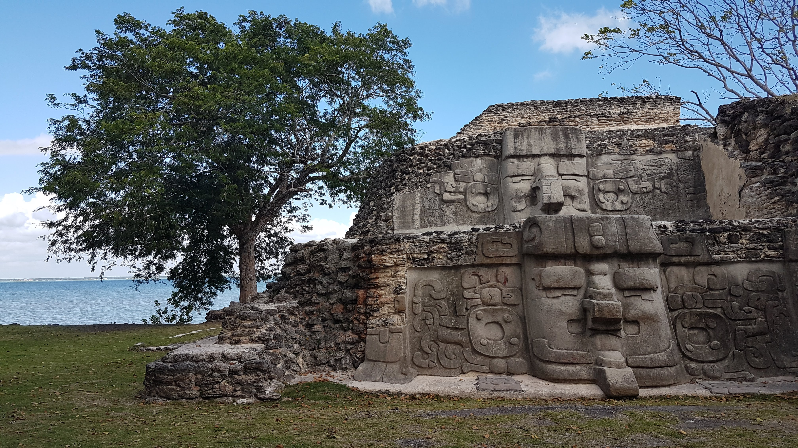
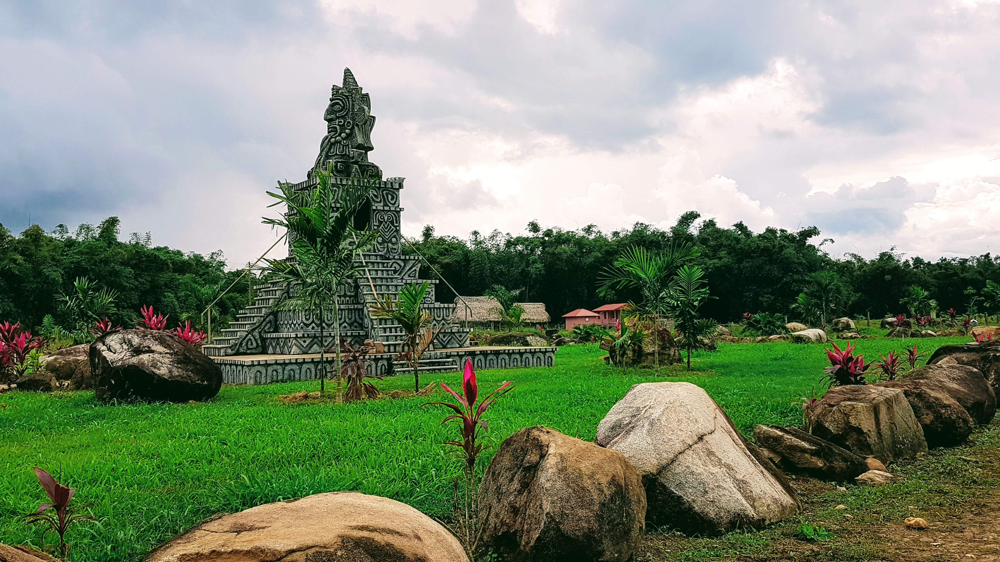
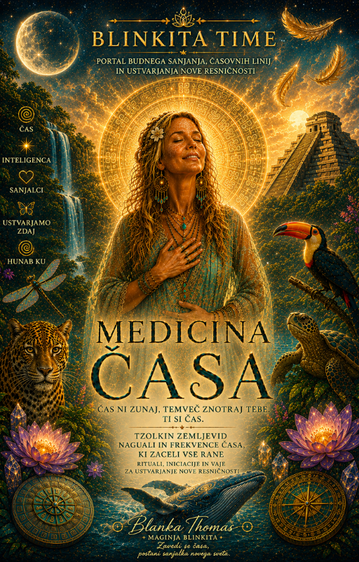
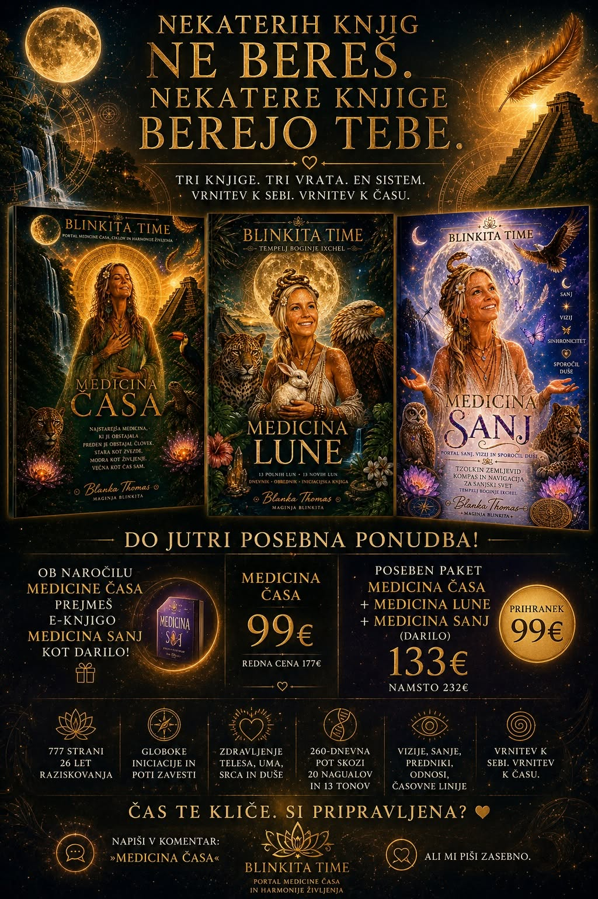
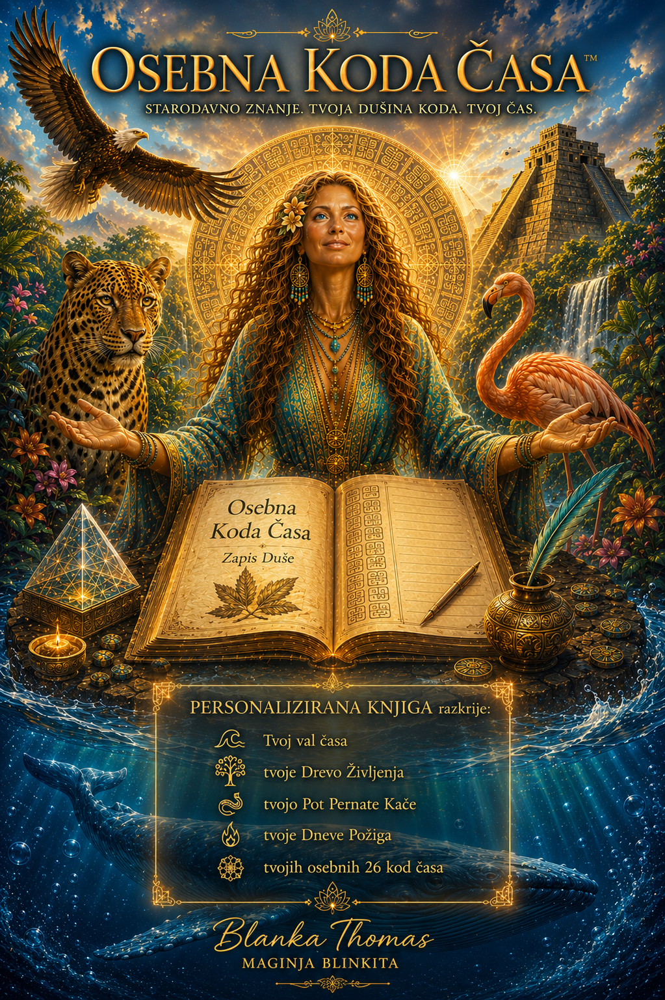

TZOLKIN PORTAL DNEVA
KODA ČASA
Koda Časa
Ta zapis se odpira skozi občutek.
Skozi telo. Skozi trenutke, ko se v tebi nekaj ustavi in prepozna svojo naravo.
Ko ga začneš čutiti, se pogled obrne navznoter.
In v tem pogledu se prebudi spomin, ki te je vedno poznal.
Koda Časa je stik z zapisom tvoje energije — prostor prepoznave skozi trenutek rojstva.
Vsak rojstni trenutek nosi svoj ritem. Svojo frekvenco. Svoj način gibanja skozi življenje.
Vsak človek pride na svet z edinstvenim zapisom.
Zapisom darov. Potencialov. Življenjskih izkušenj. In poti, po kateri se zavest spominja same sebe.
Koda Časa je oseben zemljevid tega zapisa.
Pomaga ti prepoznati energijo, s katero si prišla na svet. Razumeti svoje naravne darove. Prepoznati vzorce, ki se ponavljajo skozi življenje. In drugače pogledati na svojo življenjsko zgodbo.

Vsak rojstni zapis nosi svojo strukturo.
Svoj način zaznavanja sveta. Svoj način ustvarjanja. Svoj način gibanja skozi odnose, izzive in prehode.
Ko začneš brati svoj čas, začneš drugače brati tudi svoje življenje.

Čas ima svoj odnos s tabo. Ko ga začneš čutiti, se začne drugače odpirati življenje.
Medicina Časa te vrača v stik s tem odnosom.
Nastajala je več kot 26 let.
777 strani raziskovanja. Tzolkin. Ixchel. Hunab Ku. Srce neba. Srce zemlje.
To je zemljevid spomina, ki se odpira skozi tvojo zavest.
V knjigi se odpirajo iniciacije, aktivacije, stik z notranjim otrokom, časovne linije, predniki, prihodnji jaz in 260-dnevno potovanje skozi Tzolkin.
Knjiga se ne bere. Knjiga se živi.

začneš opažati ritme, ki so bili vedno prisotni.
Odnose. Odločitve. Prehode. Cikle.
Kar je bilo prej videti naključno, začne dobivati svoj pomen.
In zgodba tvojega življenja se začne sestavljati v novo celoto.
In še nekaj. Ta knjiga ne želi, da jo “prebereš”. Želi, da jo živiš.
Izberi svojo pot:
MEDICINA ČASA + MEDICINA LUNE + MEDICINA SANJ (darilo)
Vse skupaj: 133 €
To ni “bundle”. To je celoten ciklus zavesti skozi čas, sanje in lunine ritme.

Če želiš plačilo preko banke:
AKADEMIJA ŽIVLJENJA
Pod hribom 22
1000 LJUBLJANA
TRR: SI56 1010 0006 0655 938, odprt pri Banka Intesa Sanpaolo d.d.
Namen: Medicina Časa
Po plačilu prejmeš dostop na e-mail.
začneš opažati, da se stvari ne ponavljajo naključno.
isti odnosi.
isti občutki.
isti notranji premiki.
samo zdaj jih vidiš.

Brezplačni izračun pokaže osnovni zapis tvoje energije.
Osebna knjiga pa pokaže strukturo tvojega časa.
Čas ni linearen. Je inteligenca, ki se spominja same sebe skozi tebe.
Ko enkrat vidiš svoj zapis, začneš drugače brati svoje življenje.
Po potrjenem plačilu se tvoja Osebna Koda Časa pripravi ročno.
Rok izdelave: do 72 ur, odvisno od trenutne čakalne vrste.
Vsaka knjiga je individualno sestavljena in ni generičen izpis. Je interpretacija tvojega časovnega zapisa.
Ko je pripravljena, jo prejmeš na e-mail v PDF obliki.